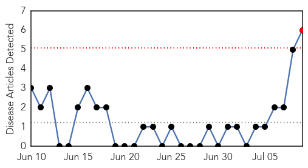

30 Day Trends
Web: 1 alerts, 0 warnings
Twitter: 0 alerts, 0 warnings
Top Articles:
- 0.990
- Guest column: Mosquito season buzzing with activity
- 0.988
- “Global Health” Must Mean Global Health
- 0.987
- Vanderbilt investigators develop potential antibody treatments against chikungunya
- 0.964
- ‘Reduce mosquito breeding sites’
- 0.785
- Potential treatment for chikungunya found
- 0.667
- If these rashes or fevers crop up, state wants to know
Top Tweets:
-
No tweets found for Jul 09, 2015
Web/News Articles
Tweets